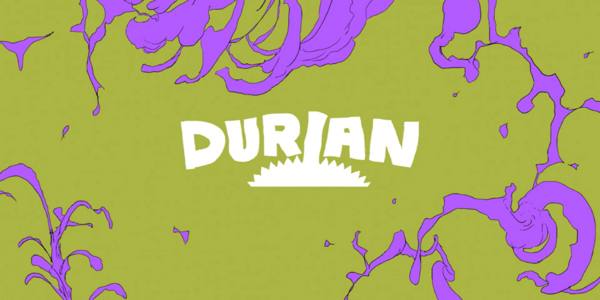

informacion sobre el estudio Durian
La película de anime Look Back (2024) es una adaptación del aclamado manga one-shot de Tatsuki Fujimoto, reconocido por obras como Chainsaw Man y Fire Punch. La producción estuvo a cargo de Studio Durian, un estudio independiente fundado por el director Kiyotaka Oshiyama, quien también asumió los roles de guionista, diseñador de personajes y animador clave en este proyecto.​
üé¨ Producci√≥n y Estudio de Grabaci√≥n
Estudio de animación: Studio Durian
Director, guionista y diseñador de personajes: Kiyotaka Oshiyama
Música: Haruka Nakamura
Duración: 58 minutos
Distribuidora: Avex Pictures
Estreno en Japón: 28 de junio de 2024 ​
